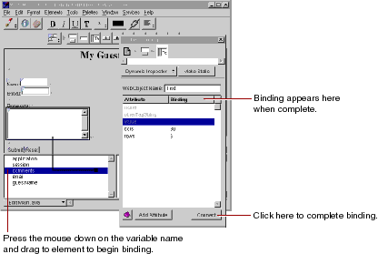

Table of Contents
Table of Contents  Next Section
Table of Contents
Next Section
Table of Contents  Previous Section
Previous Section
For example, a WOText element (which represents a multi-line text area) is defined as having two attributes:

The Inspector panel comes to the front, displaying the bindings for the text area. The value attribute is automatically selected (since that is the one that is most commonly used in bindings). If you wanted to choose a different attribute to bind (you don't at this time), you would simply select the binding of your choice.
comments appears in the Binding column next to the value attribute of the text area, indicating that the binding has been made. Also, the text comments appears in the text field to show that it has been bound.
Note: you can also bind a variable by typing its name directly in the Binding column for the desired attribute.
Table of Contents Next Section